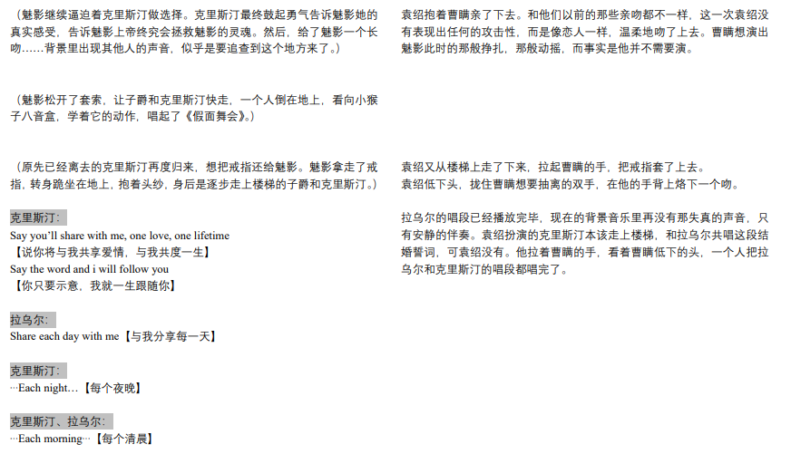
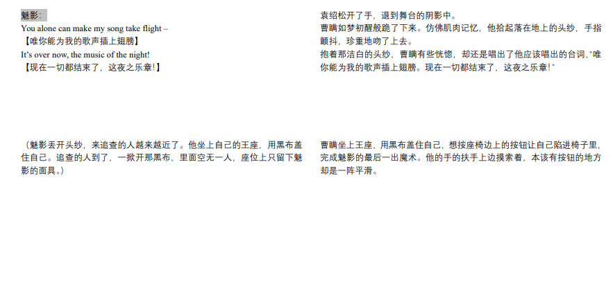
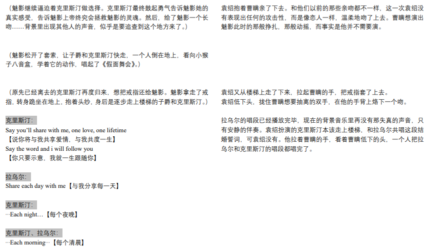
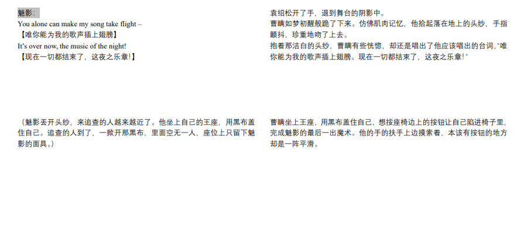

//数载阔别，常怀【云树之思】//
阅前需知：
本文为娱乐圈paro的袁曹IF线，仅为口嗨整理，有任何问题请见谅。
全长1w5+，请妥善安排阅读时间
感谢您的阅读！
序幕（PROLOGUE）
袁绍、曹瞒21岁，同属学校里一个剧团，正在剧院里排练音乐剧《歌剧魅影》，曹瞒饰演魅影，袁绍饰演拉乌尔。
结束排练后，剧团成员逐渐散去，仅留下刚换完衣服的袁绍和曹瞒，躺在舞台上休息聊天。聊着聊着袁绍提及最近表现很怪异的曹瞒。
在“装死事件”之后，曹瞒和夏侯惇闹掰，很长一段时间关系陷入冰点。在这段时间里，曹瞒有意放逐自我，袁绍多次劝阻未果。
这次的袁绍又想劝瞒，瞒却不耐烦想走，看着瞒起身的背影，袁绍突然出声问起了夏侯惇。听到这个名字，曹瞒僵在原地，袁绍又问了一遍，而这一遍未等袁绍说完，曹瞒猛然转身，很用力抱住袁绍的头，把他拽下来亲。
曹瞒本想堵住人的嘴，顺便恶心一下袁绍，却不料袁绍死命亲了回去，像在打架一样亲得很用力，还上牙咬，分开的时候已经满嘴血，还被袁绍完全制住了。
曹瞒回过神来问袁本初你疯了吧，袁绍就压着他说咱俩现在到底谁疯了？对于曹瞒来说这正是让他崩溃的点——他和惇的矛盾点有一部分就在于他觉得为什么惇不能接受行为“过分”一点的他?
他对袁绍现在也是这个感觉，瞒就是挺享受被操的，袁绍却一直跟他说阿瞒你能不能正常点。但其实瞒自己也会刻意忽略自己的心情，比如他最开始约炮有种心理上报复惇的意味，但面对别人的关心，他会刻意忽略自己这种心情的病态性，一心认为“这很快乐，这也是我愿意的”，他对袁绍有种“我自己的事情我知道，但你别管也别提”这种意味。
这次袁绍可能也会看着曹瞒又一次很严肃的问他为什么要这样做，曹瞒便会答道，我想做什么跟你有什么关系，你有什么资格来定义我的“正常”与否。袁绍听了很受伤，而曹瞒又会趁着袁绍懵逼继续说，你想知道理由是吗，我告诉你，因为我被人操的很爽。其实这时候在瞒眼里就是，我约炮对你会造成什么影响吗？你是嫌我名声难听会连累你才来找我的吗？他还是会把自己描述成一个无药可求的状态让袁绍别管了。
瞒说完之后会问袁绍，我说完了，可以放开我了吗。但是袁绍还是什么也不说，死死地抓着曹瞒，瞪着眼睛不可置信的看着他，阿瞒怎么能把这么粗俗的话直接说出来？
曹瞒挣扎未果，便把力气卸了，任由袁绍压着他。扬起头，曹瞒笑着开了口，袁少爷还不放开我，是也想试试我吗？
正常线：袁绍被问得冷汗直冒，立刻把手松开了
彩蛋线：袁绍不仅不松手，还握得更紧了。同时眼神一下子就不对劲了，变得很奇怪，说"我果然没记错，是阿瞒自己先说的"，气场也完全变了。最悲惨路线的袁绍穿越到了这个袁绍身上。
最悲惨故事线里的曹瞒冷血且不懂爱，把袁绍以及其他人的心理都折磨到接近崩溃，全部cp都BE了，且所有人结局都不太美妙
第一幕 - 剧院（ACT ONE - THEATRE）
Scene 1. 姿势
曹瞒听到他莫名其妙的话，已经很敏锐地察觉到有什么地方不对劲了，他开始用力地想要挣脱，却被袁绍直接撕了裤子。
- 曹瞒觉得危险，想要逃走，却直接被袁绍拽到舞台边上，上半身悬空着，只能靠袁绍压着他的腿才能维系平衡不掉下去。曹瞒原想踢他，可这么个姿势让他无法轻举妄动，身体倒着，血都往头上涌。
- 一个危险至极的姿势。在袁绍眼里，这是一种“如果我不拉着你，你就会摔死”，“我可以选择你的生死。我可以压着你不让你掉下去，可以送手让你死亡，也可以让你摇摇欲坠地活着。”——和袁绍摇摇欲坠、鱼死网破一般的心很搭。
- 曹瞒眼里满是那倒着的剧院座椅。他的脑袋因为充血而发胀，思绪乱成一团，但是他能看到自己最熟悉的剧院。总是有人坐在上面为他鼓掌喝彩的座椅空空如也，静静地见证着这样令人难堪的景象。
Scene 2. 求生欲
袁绍跟曹瞒说你再乱动我就松手了，曹瞒于是就真的会乖乖的不乱动……
- 天哪袁绍爽死了，想看你求我想了一辈子，原来这么简单的吗？袁绍又爽又觉得原本被折磨得精神崩溃的自己很可笑。明明这么简单，我当初怎么就没有发现呢？
- 曹瞒并不在乎逃跑得好不好看，但是他一定要活下去，也从不对自己的求生欲做掩藏。
- 袁绍察觉到这一点（瞒的求生欲）后肯定会沉迷于此……他很喜欢跟瞒玩窒息play，掐着瞒的脖子。瞒挣扎着想摆脱他，而袁绍每次就在真的快要窒息的时候才放开，这种掌控感能爽得让他射得一塌糊涂。
Scene 3. 流血
本来就被操得大脑缺氧充血了，又是这么一个姿势，曹瞒很有可能会流一脸的血。眼前的椅子都变红了，他觉得自己真的快死了。
- 袁绍会有那种假假的怜惜和关心（当然，是在确定瞒只是流了一些血，而不是出什么大问题之后）：天哪阿瞒你怎么流了这么多的血，怎么把自己弄成这样了？但其实他好喜欢阿瞒被他这么成这么凄惨的模样，还只能依靠他的样子。。。
- 曹瞒可能会求饶，用气声很小声地哀求……明明刚才还跟婊子一样问袁绍要不要来操他呢，现在怎么这么凄惨呢，袁绍也很心疼呢🥺
- 瞒的嘴里都是血腥味，可能还会被血给呛住。袁绍可能会用手帕（瞒随身带着的）给瞒擦脸，很细致，“怎么把自己折腾成这个样子了呢”，就好像不是他的错一样。
Scene 4. 精神错乱
袁绍一边操瞒，一边还会问那些让他崩溃的问题。
- 比如会问张辽于禁关羽的事情，但明明瞒都还不认识，不知道他在说什么，可能袁绍就想看曹瞒听到这些名字之后茫然的表情吧。最开始是因为精神错乱而暂且反应不过来时间线的变动，但会在最后猛然反应过来，接着问道：夏侯家小子一会儿会来接你吗？要不我们快点吧？
- 这里的惇操还是闹掰了的状态，本就是因为袁绍提夏侯惇而和他闹脾气的曹瞒听到这些话肯定得精神崩溃。不只是求饶了，他会求袁绍住嘴，不要再说了。但是袁绍很高兴😇他会问瞒，夏侯小子没继续给你做便当了吗？怎么一直去找别人（吃饭/约炮）不找我呢？哦对了，你知道吗，之前夏侯惇来找我了呢……（这个时间线的惇还没有来找袁绍，但是那个袁绍的时间线里一切都发生过了，他已经把两个世界完全混到一起了。）
- 袁绍一会儿死命掐瞒脖子，一会儿就会轻轻摸着自己掐出来的印子抱着瞒说，你怎么不能是我的呢。他还会乱说话，比如问瞒 为什么要自己独立（开工作室）呢，为什么宁愿和董卓上床也不跟我一起呢（时间线完全错乱了）
- 袁绍可能会语无伦次的把两句话组合在一起，但是曹瞒听了就会大崩溃。比如，前一秒袁本初说，阿瞒知道夏侯惇跟我说什么了吗？他说………（但是又突然想到自己被背叛的时候，自己明明一直那么信任曹操，悲从中来，发出感叹）：阿瞒，你是个骗子。（这里袁绍完全忘了当初夏侯惇说了什么，下意识接了自己想说的话上去，结果瞒听到后完全崩溃了。）
- 袁绍的记忆已经碎片化了，乱糟糟的，同时也开始语无伦次了，完全没法控制自己的声音，也不知道自己在说些什么。
Scene 5. 监禁
【袁绍】：官渡那场戏给了我一个灵感……
- 其实就是把瞒锁起来。但是想到瞒那个角色最后逃跑了，袁绍又慌张的说要不阿瞒不要腿了好不好。
- 商量的语气，好像真的很尊重瞒的想法呢。
- 这时候的瞒半晕不晕，还保留一点意识但是精神恍惚，或者还沉浸在刚才袁绍提惇时候的痛苦，结果袁绍：你默认了对不对！瞒可能都怀疑自己幻听了，什么官渡，什么监禁，他完全听不懂袁绍在说什么，在他的视角下，袁绍就是突然疯了。
- 这时候瞒可能还对袁绍抱着一点期望，就是觉得朋友怎么突然疯掉了，不懂原因，但是他总不能不管吧。但是瞒现在也问不出口，想说什么但是也没有力气再说了。可能会握住袁绍抓着他的手，然后来不及说什么就真的昏过去了。
- 瞒脸上的血有一部分在袁绍一会儿抱一会儿亲的时候都弄到袁绍衣服上了，感觉像杀人现场这个do i。
Scene 6. 昏厥
精神崩溃、身体也承受过度，曹瞒得晕。
- 他昏了袁绍会继续做，不过会换一个姿势，毕竟瞒都昏过去了……
- 曹瞒真的昏厥过去后，袁绍还会抱着瞒打量他的腿，一边摸一边考虑要不要真的试一下。阻止他现在就对瞒的腿下手的唯一原因就是完整的阿瞒很漂亮。如果阿瞒乖乖的，他也不舍得切掉瞒的腿。
- 袁绍会做到挺迟，排练的剧院都快关门了，才反应过来去更衣室换衣服洗澡、帮瞒清理。对他来说，现在时间已经很无足轻重了。可能是有保安之类的来催促说要关门了，在门外喊了一声，袁绍才稍微回魂了一点，然后低头看瞒，跟个死人一样，但是很听话很乖。他最想得到的东西已经握在手里了。现在就是要打造一个牢笼，让瞒一辈子也跑不了。
第二幕 - 监禁（ACT TWO - PRISON）
Scene 1. 习惯
一切都成了习惯。
- 若说最开始被关进来的曹瞒还会骂袁绍，比如用《歌剧魅影》里魅影骂克里斯汀的唱段“Curse you, you little lying Delilah / You little viper”之类的来骂袁绍，那么后面的曹瞒就已经习惯了这一切。
- 袁绍给曹瞒拴上了链子。最开始拴得很严实，四肢都会被束缚住，袁绍晚上会抱着动都不能动的曹瞒睡觉；后期会稍微好一些，比如在袁绍出门以后只会拴一根脚链。
- 出门前袁绍刚给瞒洗了澡，梳了头发。头发也变长了，给阿瞒束起来。瞒在被做这一切的时候一直在发抖。
- 瞒现在已经很习惯了，早上袁绍叫他起床之后靠过来，他就下意识伸手，袁绍就给他穿衣服、系扣子，接着就会夸阿瞒好乖。
- 上衣估计也是袁绍之前的，所以很大件。
- 裤子先不穿，先领着瞒去卫生间，现在的瞒已经没有羞耻心了，看着袁绍给他把内裤脱掉，然后帮他扶着，他就可以小便了。小便完，袁绍会用湿巾帮他很仔细擦擦，再帮他穿好裤子。
- 瞒有时候也混淆时间了，不知白天黑夜，不知几月几日。袁绍有时候会整夜地操他，会在不同的时间给他喂饭，袁绍也在有意模糊曹瞒的时间观念。
- 瞒很期待袁绍过腻这种生活。他想袁绍是个公子哥，他这里又唯命是从很听话，袁绍应该很快就会腻了。结果阿瞒越这样，袁绍就越爱自己的妻子了……毕竟，乖乖听话的袁夫人，不就是他一直想要的吗？
Scene 2. 戏耍
瞒的求生欲，就是袁绍戏弄他时最好的把柄。
袁绍有时候会在离开之前把水放在瞒刚好够不到的地方，如果瞒不趴下来像狗一样舔着就会喝不到水。
袁绍会在房间里安装监控，就是为了看到瞒在他不在时候的一些举动，比如说像小狗一样喝水的模样，并且都录制下来，回去了再放给瞒看。这下瞒真的成为“吉利”小狗了呢。
在惇曹世界线里，摄影师惇拍过一本狗的影集叫《吉利》，free talk里说，这一本里面是他遇见过的所有叫吉利的小狗。影集的封皮很素很典雅，《吉利》用的是汉魏篆书之类的古朴字体；而封底是模模糊糊一个人的影子，看不清，但其实就是曹瞒的背影。整本影集都是用胶片相机拍摄的，颜色很淡。惇最开始出这本摄影集的时候只印了几百本，不多，最后卖了也只是堪堪回本，其实根本比不上他去接商业单子，但他就是要出。这是他第一次尝试拍动物，以前拍人比较多，商业广告也都是拍人。有一次和瞒逛巷子，遇见了条一直粘着他们的小土狗，巷子里的老人不认识他们俩，只觉得是普通俩小伙子，于是很亲切跟瞒说这只狗叫吉利。瞒一听就笑得很开心地对惇说，嘿！跟我小名儿一样！正是因为曹瞒这句话，惇才动了拍这个影集的心思，每次见到吉利小狗都会拍几张。
袁绍很想把人训成听话的小狗，而瞒只能装狗。袁绍可能经常会用操母狗的姿势来操瞒，还会给瞒的脖子也拴上狗链，塞尾巴肛塞。
袁绍会故意渴着瞒，不给他水喝，然后在瞒很渴的时候让瞒给他口。最开始瞒的嘴里干干涩涩的，袁绍还会给他讲“望梅止渴”的故事——这是小时候瞒骗他的时候讲过的故事——然后问 阿瞒有没有觉得好一点呢？瞒真的很想直接把袁绍唧唧咬断喝他血，但他没办法，只能乖乖舔。
以前被射进嘴里的前列腺液瞒都会觉得很恶心，但这次实在是太渴了，缺水过度，所以都会好好喝下去。可能袁绍渴着瞒就是因为看到阿瞒口交的时候总是那么不乖，射进去的东西从来都不好好喝掉，所以才想着要惩罚他。
精液里面大部分都是水分。精浆占百分90到95%。里面还含有一些蛋白质，脂肪和糖类，还有一些微量元素一些酶类的物质。
袁绍有一套很完善的奖惩机制，比如曹瞒不好好口交，就会被这样惩罚。这时候的曹瞒还很年轻，而袁绍早就经历过大风大浪了。这个瞒已经完全接受了自己现在就是靠袁绍心情生活，讨好袁绍能让他过得好一点。
以往都是袁绍强迫曹瞒口交，但这次袁绍就会装出一副“只要随便舔两下”的样子，想把他的鸡吧拔出来，但瞒就会挽留，会使劲含着不让他走。
而且瞒的手被链子拴住了很难用力，在口交的时候完全没法用手，都是用嘴伺候袁绍，只能抬着脸去顺从。
袁绍一直不射，还会很委屈地跟曹瞒说，阿瞒能不要再这么用力地吸我了吗？可是瞒看他一直不射也很急，他真的好渴。
袁绍快要射出来的时候，会很用力操曹瞒的嘴，瞒就一直保持着那个姿势，要控制自己不被袁绍顶走，又要确保袁绍射进自己嘴里，实在是有些困难。
袁绍射出来之后，曹瞒会迫不及待地吞下去，还会舔舔袁绍鸡吧的马眼，再小口吸两下。确定再也没有东西之后用脸蹭蹭袁绍的鸡吧，哑着嗓子说本初，我还想要。虽然袁绍显然是会有点兴奋的，但他会装，会对瞒说“阿瞒怎么这么任性呢，不能你想要就给你吧”。
喝水是有偿的，为了得到袁本初的精液，阿瞒会做什么承诺呢？
Scene 3. 勃起不能
瞒的唧唧已经没办法用了，无论袁绍怎么操他、他觉得有多爽也勃起不了了。
- 起因是剧院那次，袁绍死活不让他高潮，看他快要高潮了就掐回去。后面和瞒做爱的时候袁绍又不断加强这一点，瞒每次有感觉又给憋回去了。
- 为了能喝到水，曹瞒答应了袁绍一个很过分的要求：一个星期不能射精。袁绍的理由是“水这么珍贵，阿瞒怎么能从下面漏出去呢，这么浪费”，瞒当时也不管三七二十一的，为了喝水先答应了下来。而且袁绍还会对瞒承诺，“阿瞒让我用后面，如果今天阿瞒能够忍住不射的话就有水喝了”。瞒最开始还觉得挺简单的，问袁绍“真的吗，说到做到？”袁绍就捏着他的脸对他说，“你以为谁都像你一样吗？”小骗子曹瞒，一个很经典的梗
- 这次袁绍在操曹瞒的时候还会拿飞机杯榨他，为了不让自己射出来，曹瞒得掐自己。掐大腿根，掐肉最嫩的地方。他的指甲被袁绍修剪得钝钝的，可却还是会把自己掐出血来。有时候瞒的手可怜巴巴的想去阻止袁绍榨他的手，却只敢扶着袁绍的胳膊，不敢真的用力。袁绍还会一边说“阿瞒不舒服吗，不喜欢吗”，一遍顶瞒的前列腺。
- 瞒甚至想要掐自己的蛋蛋了，但是却完全不敢碰，生怕一碰到自己就射出来了。这时候袁绍还会很好心地帮他呢，“阿瞒是想摸这里吗？”能忍住的阿瞒真的太艰难了！而且在这天，袁绍给瞒喂水的时候还会很恶趣味地用勺子一口一口喂，让瞒坐在他的腿上，一只手从像撸猫一样摸着瞒，一只手给他喂水。
- 这一个星期里瞒的精液都不知道被憋回去多少次了，之后被允许射精了才发现已经没办法再勃起了，只会乱漏。被解放的这天漏了很多呢，像失禁一样。本来袁绍都准备好对瞒说“阿瞒怎么又骗我，答应的事情又没有做到”，结果瞒居然真的做到了，虽然已经被玩坏了！
- 感觉瞒每次尿尿都会痛痛的，在床上也再不能像一个普通男人那样正常射精了。袁绍发现了之后应该会很兴奋吧，他把瞒玩坏了欸，现在的袁绍也可以安心在瞒身边睡着了！
Scene 4. 道具
袁绍出门的时候会给瞒上各种道具。
- 袁绍可能会在他不在的时候会把瞒固定在炮机上，或者是跳蛋按摩棒whatever，总之在他离开的时候也不会让瞒闲下来。他还会给瞒选择，问你想要哪一个呢？
- 每次袁绍回来——或者是打开房间里监控时候都可以看见被他绑着上了道具的瞒。瞒经常被玩得眼睛都不聚焦了，凄凄惨惨的样子让袁绍看着真是又心疼又满意。而且瞒真的总是在求袁绍了……袁绍得偿所愿。
Scene 5. 夏侯惇
惇肯定能发现不对劲。
- 惇可能最先会找袁绍问情况，和袁绍交流的时候也可以明显察觉到不对劲，就会想着报警……但是袁绍会逼曹瞒写信给惇，让他别找他了，自己过得很好。
- 瞒会妄想在信里藏什么信息，袁绍肯定也知道，所以袁绍可能让瞒连续写了一个月。就是每天早上都写“夏侯惇，我很好，勿念”，瞒写完了袁绍就会撕掉，第二天让他再写一遍……像是一种洗脑。
- 但是惇肯定能察觉到不对劲……袁绍这个太明显了，他其实也没想瞒过惇。所以袁绍的目的可能不是让惇别找了，而是就想让曹瞒听话地做这件事。而且他这么做又像是一种奇怪的炫耀（瞒在我这里过得好好的，你们都闹掰了，你也没必要接着找了吧？）
- 袁绍对夏侯惇的膈应绝对很深。一开始那些盒饭什么的已经让袁绍很膈应了，后来惇来找他的时候也发生了争执。而且袁绍能很强烈地感觉到阿瞒是在跟惇发生了不知道什么事情之后才变怪的。结果他去问瞒，瞒又始终不说，甚至厌恶起袁绍来了……一切都是夏侯惇的错。况且这次，就是从他提的夏侯小子开始，事情才变得越来越难看。
- 惇最后还是报警了。当时的袁绍也被当作嫌疑人查过，但是因为他处理得天衣无缝，警察就算怀疑他也没有实质性的证据。而且曹瞒行为不太检点，警察也怀疑可能并不是失踪……再加上瞒被袁绍强迫写的给惇的那封信（袁绍随便找流浪汉什么的塞在惇家门口）确认笔记是本人之后，警察就觉得曹瞒可能去的地方太多了，应该并非失踪。
- 但是惇不死心，一直在找瞒，他把怀疑人缩小到了袁绍，也跟踪过袁绍一段时间。有一次袁绍突然在一个地方反跟踪了他，看着惇开口道，“即使曹阿瞒真的在我手里，你这样做只会给他带来麻烦，”然后又笑了说：“开玩笑的，我怎么会伤害我的竹马呢，我的担心不必你少……”
Scene 6.“杀了我”
袁绍有时候疯起来会拉着曹瞒的链子，叫他杀了自己。
- 但其实事实是“杀了我你也出不去。如果我死在这个屋子里，阿瞒就会一直一直看着我的身体如何浮肿、腐化、生蛆。阿瞒可能还会活很久，因为阿瞒可能会忍不住去舔我伤口里流出的血解渴，吃我的肉”。
- 这个屋子的锁很复杂，大概有好几层，电子锁+瞳孔解锁之类的，所以瞒是很难逃出去的，就算是解决了袁绍也无济于事。
- 袁绍其实知道瞒不会杀了他，但是也不是特别笃定，因为如果瞒真的杀了他，结局也不过是同归于尽。可是瞒又那么喜欢活着……因此袁绍其实就是仗着瞒的求生欲而一次又一次地试探，赌瞒为了活下去能做到哪一步罢了。
- 瞒其实并不听话，至少不会听他的话。在这样的情况下，就让瞒对生活的执着暂且做做那根链子吧。
Scene 7. 精神问题
现在的瞒很多人都还不认识，以后也可以全都永远不认识了呢。可是在袁绍心里，瞒真的不认识吗？他真的不会像自己一样也经历时间线的跳跃吗？
- 瞒没怎么演过戏，辽应该完全不认识曹瞒，未来的人生道路也会有很大的变化。小于在被开除后最绝望的时候也没人帮他，不知道会发生什么事情。不遇见曹瞒的关羽能过上暗淡无光却平稳的一生，没有人讴歌他了。不过袁绍可能会针对他，关羽星途更黯淡了，可能中途就转行了。
- 袁绍会搜集起来这些人的信息（不管他们当时是什么职业在干什么）拿给瞒看，然后看曹瞒看着他们茫然陌生的样子。刚才还在让瞒看这些人的照片和资料，下一秒又开始突然操他。袁绍可能会病态一样地追问，你认识吗？不认识？真的不认识吗？你看看这一段，这个资料，你怎么会不认识？还有可能把那些资料撕得粉碎，说不许你看，你不能认识他们。
- 瞒可能最开始尝试过顺着袁绍说，说他认识，结果袁绍大发疯。袁绍会在发疯的时候突然笑起来，说你看没有你他们过的什么鬼样子？瞒被折磨得奄奄一息，只能求饶说是骗他的，这时候的袁绍又会崩溃说 阿瞒怎么又说谎骗他？又会歇斯底里地发疯一通。疯完之后的袁绍可能会突然笑起来，叹了口气，唉，我也不想这么做的，你为什么要逼我呢？
- 袁绍很害怕自己的这种时间错位情况出现在曹瞒身上的，所以他会瞎想。而且瞒就算真的时间错位了也能演他，袁绍一想到这里就会发疯。明明曹瞒已经在他手里了，可还是没有任何安全感……真可怜啊。
- 曾经演过的官渡情节和现实中的景象开始交错重映，袁绍有时候对瞒的称呼会变成剧情里的称呼，说话也会变得民国时期那种腔调。
第三幕 - 安可（ACT THREE - ENCORE）
Scene 1.相簿
袁绍跟曹瞒一起看起了以前的相册。
袁绍刚给瞒洗完澡，吹完头，抱着他剪完指甲，然后就着这个姿势拿出相册。最开始的瞒是没什么反应的，他已经有点习惯了袁绍想一出是一出地给他安排所有“娱乐活动”了。
袁绍会像抱着小孩子一样，瞒没反应他就用自己手握着瞒的手去翻，自己在那自顾自地说。瞒想把手撤走他也不停，只是手会突然非常用力，甚至都快要把瞒的手捏断的那种力道，但是如果只看他表情的话什么也看不出来，只会觉得他似乎很开心。
袁绍一边翻这本只被填满了一半的相簿一边对瞒说话，明明瞒对那些都还是有印象的，但他还是像在教小孩一样，跟瞒回忆当初排练、演出时候的经历。瞒没怎么说话，主要也是因为袁绍精神状态很不正常，总是上一秒很温柔、下一秒却崩溃，但他太久不说话也不行，袁绍又会发疯说阿瞒怎么不说话呢，是都记不得了吗？
袁绍看到别人的照片会时不时judge别的剧组成员，说他们没教养之类的，但是瞒可能会觉得那人不错或者根本没有印象，他们两个人对剧团成员的认知其实是不一样的。
设定上该剧团的团长是袁绍，副团长是曹瞒，比起热衷戏剧表演的曹瞒，袁绍只是普通程度的喜欢，他去竞选团长原因其实是他不喜欢屈居人下。正因如此，作为副团长的曹瞒跟众位成员的相处也会更多，剧团事务也经常是他在跑的，这位副团长近乎大家眼里的真正团长。《歌剧魅影》作为一部很经典的音乐剧，是他们这个团选中的大四演出项目，演完这出戏后老一批的成员都会退出，比如曹瞒袁绍他们都会卸任。选择这么经典的剧目进行演出绝对是极大一个挑战，不那么喜欢魅影癫狂形象（作为演员的袁绍并不喜欢扮演此类角色）的袁绍最后选择扮演子爵，而曹瞒则选择了魅影。然而，这出剧目因为曹瞒的失踪而没能在学校剧院里演出……
袁绍翻到相簿中间发现没了，可能会说 真可惜啊，阿瞒怎么现在都不演戏了呢？一想到这个，他又会发疯般一下子站起来，本来靠在他身上的瞒还差点摔了，幸亏瞒稳住了自己。袁绍说“阿瞒我们现在演一段吧”，也不说什么剧目，就看着曹瞒，还会问阿瞒是不愿意吗？
曹瞒想逃跑，因此会想尽办法，这次事情给了他启发。他唱起了《歌剧魅影》里的桥段（最后一段子爵、魅影和克里斯汀三人对峙的桥段），并且演着演着撞到沙发/床之类的，让演的效果很烂，期望袁绍发现这一点，带他去剧院。
曹瞒一方面想逃出去，所以会刻意凸显环境的不合适，当然他的身体在这个小屋子里束缚久了，本来运动起来也就有些吃力；另一方面他想起《歌剧魅影》这个桥段里魅影用套索想要绞杀子爵，如果他能到剧院里拿到道具，或许能够杀死袁绍……
Scene 2.正常
袁绍变得越来越正常。
- 瞒一开始这样做（在演《歌剧魅影》时演出效果很烂）的时候希望袁绍能懂他的暗示，但是袁绍只是面无表情看着，瞒还以为他的企图失败了。然而在之后的一段时间里，袁绍虽然没有提放他出去的事情，但是晚上的时候突然开始每天把他那只绑着铁链的脚松开，给他轻轻揉搓。
- 这段的袁绍突然变得很“正常”，不会再那么的喜怒无常，也不会整天拿乱七八糟的道具玩他。不会突然掐他脖子，也不会拿他当小孩，甚至不操他，好像这阵子又变成了朋友在家借宿那种状态。
- 瞒最开始胆战心惊的，觉得袁绍发什么疯，之后逐步适应，感觉这样似乎还好，但是习惯了之后又会觉得还是被束缚着。
- 之后袁绍的行为越来越“正常”。袁绍这段时间每天晚上给瞒揉腿，白天甚至开始不拴着他了。瞒会趁机去锻炼一下自己日渐消瘦的身体，他知道如果自己体力跟不上的话根本没有出路。瞒也想过逃跑，可没有窗户又上了多道锁的门实在难以逃脱，袁绍的监控又时常会看他，瞒只好作罢自己趁机逃跑的心思。
Scene 3.出发
袁绍是在一个凌晨把瞒带走的。
- 瞒在袁绍进来那一瞬间他就会醒，袁绍这一阵子没在这个时间段找过他。曹瞒一直背对着门口，仔细听着袁绍的动静。袁绍动作轻轻的，像是不想吵醒他一样。曹瞒不知道袁绍想要做什么，这段时间袁绍的太正常在他眼里却显得太不正常，因此曹瞒也做了一些防备，全身紧绷着，心想如果袁绍这次是来杀他的，他也就拼个你死我活。
- 但是袁绍只是轻手轻脚来到他身边，用好像是半夜背着家长翻窗户出去玩的语气问他，阿瞒，阿瞒，要不要跟我去一个地方？
- 瞒肯定有一刻是想要回复“本初大少爷又找到什么好去处了”——就像他们小时候那样。但是他没有回答，他咽了下去。
- 现在是冬天，袁绍给曹瞒翻出来厚厚的衣服，一件一件给他套上，裹得像一只小企鹅。还会有画有可爱图案的袜子，小猫咪小兔子小动物。
- 瞒在屋子里的时候感觉不到什么外面的气温变化，屋子里的空调让瞒的屋子气温都是恒定的温暖。被套上厚衣服的瞒还有点不情愿，袁绍就把扣子扣好，拍拍瞒的脑袋说外面很冷，阿瞒不要脱掉外套。
- 袁绍给瞒穿厚厚的靴子的时候，瞒一只脚都要进去了，袁绍突然叫停“等一下”，又从装着衣服的包里拿出来两个3cm左右的保暖增高鞋垫，认认真真在瞒面前塞到新靴子里去，还一边念叨，我记得阿瞒以前是这样穿的……
- 袁绍给人穿上衣服后，用手铐把曹瞒和自己的手腕扣在了一起，然后抓着瞒的手腕把人牵出去，经过了层层检验才出了门。瞒就有点庆幸自己当时没有打晕袁绍，不然也出不去。曹瞒回头看了眼这栋屋子，心想这次出去，他最好能找到机会解决了袁绍，他再也不要回来这里了。
- 袁绍的手和曹瞒的手拷着，两个人没法分开从两边车门进去，只能让瞒从驾驶座那边进去再跨过去到副驾驶，袁绍再进去坐在驾驶位。穿得厚厚的小企鹅瞒跨过去的动作也笨笨的，袁绍特别喜欢，阿瞒从小就比他聪明，现在笨笨的太可爱了。
- 开车前袁绍还特地亲了瞒脸颊一口，给他系上安全带，真的很像一对小情侣呢~袁绍还会去开暖风，拽着瞒的那只手就晃来晃去的。为了开车，曹瞒那只和袁绍拷在一起的手也被带着挂在了方向盘边上。
Scene 4.车上
车启动了。
- 瞒在路上一直看着窗外，一边想他带我去哪，一边想我怎么逃走呢。窗户外边黑乎乎的，只有几盏路灯照亮这段他并不熟悉的路。冬天的清晨亮得迟，凌晨时分没什么车，只有一些大卡车货车，偶尔有喇叭的响声，其他时候只有沉默。虽是看着窗外，可一片漆黑中他总能看到袁绍在车窗上的倒映。袁绍的脸在玻璃上模模糊糊的，看不太清晰，曹瞒隐约能感受到袁绍的心情不错。
- 曹瞒那只被袁绍拽着的手如果乱动可能会引发车祸，所以他不敢夺方向盘，一路上静悄悄的也不说话，不断思考着袁绍究竟想要做什么。曹瞒现在不敢反抗袁本初很大一个原因就是现在的袁绍太不按照套路出牌了，曹瞒根本没法像以前那样预料到袁绍下一步行动。
- 天逐渐抹亮，漆黑的夜空染上几分深蓝，曹瞒逐渐能看清外边了。随着外边的景色一点一点熟悉起来，曹瞒不安又夹杂着安心的感觉也越来越深。他看着窗外的眼睛开始左右查看，背坐直了一些，眉头也皱起来了。
- 袁绍发现了曹瞒的动静，没有解释，只是顺手握一下曹瞒在方向盘旁边挂着的手。袁绍的手是干燥的温热的，但还是让瞒有种心悸感，莫名其妙的就有种被爬行动物或者什么冷血动物盯上了的感觉。甫一搭上，瞒就冷不丁起了鸡皮疙瘩。
Scene 5.剧院
成功人士袁绍买通学校值班人员是很轻易的事情。他把车直接开到了学校的地下停车场里，牵着曹瞒走了出去。
袁绍温暖的手就那么牵着曹瞒去剧院，曹瞒感觉自己跟上刑场了一样，即使周围都是熟悉的景致，心头却还是惴惴不安。他有点想大声求救，可袁绍就在旁边，周围也没有人，他怕袁绍直接杀人灭口。
他们是从剧院的正门进去的。沉重的大门在身后缓缓合上，剧院里一片漆黑。袁绍牵着瞒的手，带他从座椅中间穿过。
该剧院的灯光室在后台，一般的工作人员会直接从后门进去安排灯光，而此时的他们从正门进去没有开灯。
脚下的地面铺了那种软软的垫子，大概是为了防止大家走动的时候声音过大，所以他们俩走过去的时候没什么脚步声，只有鞋底跟垫子接触的很轻微的摩擦声。垫子有点厚度，曹瞒觉得他走的每一步都有点陷下去的感觉。
以前这个剧院里总是会有很多人、很多声音，即使是只有他和袁本初两个人单独留下来排练的时候，也会充满他俩扯皮互损的笑声。但这次不是，曹瞒第一次感觉到地面的垫子、空椅子的扶手、沾满灰的幕布原来也都有这么大的声音，听见很大很空的空间才有的那种嗡鸣声。什么声音都是大的，还有呼吸声，曹瞒只能听请自己的呼吸声，前边的袁绍就跟死人一样，悄无声息。
曹瞒对剧院的最后一次记忆停留在倒过来的世界和自己嘴里的血腥味。即使他还是能想起不少在这里快乐的记忆：和剧团成员们一起排练演出；和袁绍排练着排练着笑场了；来接他的夏侯惇手里提着顺路买的糕点，坐在第三排看着台上的他；每次演出结束后亮起的灯光和观众的掌声……美好的记忆一点一点散去，取而代之的是那些并不那么高兴的事情。夜盲症让他的眼前一片漆黑模糊，不安宁和恐惧摄住他的心。
袁绍走得很稳，他的步子也大，即使不算快，曹瞒也显得有些跌跌撞撞了。为了稳住身体，他回握住袁绍，任由袁绍把自己牵向不知何处。
袁绍拉着瞒从舞台旁边的小楼梯上去。袁绍走在前边，往上迈了两节楼梯后回头扶住了瞒，开口让他小心楼梯。
踏上舞台，没有了软垫，坚硬的地面和靴底撞击发出清脆的声响。袁绍还是牵着他从舞台边缘走，在前边拉开了帷幕，露出更深更黑的后台。“阿瞒先进去吧，”曹瞒闻言脚步一顿，最后还是先走了进去。
Scene 6.后台
他们走进了后台。
- 黑黑的后台看不清任何东西，只有很多道具叠在一起后的奇怪剪影和仿佛要把人吞噬的幽暗。曹瞒定在原地不动了，他身后的袁绍也走了进来，拉下帷幕，那只带着手铐的手提起，盖住了他的眼睛。“阿瞒，我要开灯了哦，等一会再睁眼。”
- 开灯已经一会儿了，曹瞒睁开眼睛，睫毛在袁绍的掌心眨动，袁绍这才放下手。后台的灯光很明亮，瞒这才看清那些剪影原来是他以前的戏服。
- 袁绍解开自己的衣服扣子，松了自己手上的手铐，拷在更衣室角落的水管上，还给瞒拉了张椅子坐。瞒被拷着坐在那里，眼前是面对着他的、正在脱衣服的袁绍。袁绍脱衣服的动作很平常，没有任何不适也没有任何性暗示，就像是面前没有人一样。可他却一直盯着曹瞒的眼睛，每当瞒想要别开视线不去看的时候，袁绍就会开口叫“阿瞒”，示意他看过来。袁绍换上了一套白西装——并非他们之前在排练时候子爵应该穿上的那套。
- 换完自己衣服的袁绍开始给瞒换衣服。冬天的剧院很冷，袁绍给他脱衣服的动作慢慢的，穿衣服的动作也是慢慢的。这套他以前换上过的戏服大概才被洗过，很干净，没有放久了的霉尘味。袁绍给他换上的衣服就是魅影的那套黑西装。
- 换完衣服，袁绍又把瞒拷在了化妆台前，对着镜子给瞒套上魅影妆容的那层假皮肤，给瞒化妆。是想和他再演一出《歌剧魅影》吗？他当初的企图居然实现了。曹瞒心里想着，如果能拿到魅影的武器旁遮普套索，或许真的有机会控制住袁绍。
- 被画完妆的曹瞒睁开眼，以往一直不怎么会化妆的袁绍这次手艺意外的不错。他看着镜子里的自己，突然听见旁边的袁绍开口，“阿瞒，过了今晚一切就都结束了。”曹瞒愣住了，没有被束缚住的那只手里被塞了一只解锁了的手机，“阿瞒，报警吧，”袁绍是这么说的。
- 曹瞒没有动作，袁绍拉着瞒的手，替他按下了110。电话很快被接通，曹瞒不敢说话，袁绍却轻轻推了推他，抬起曹瞒拿着手机的手，“喂，我要报警，”紧接着示意曹瞒快点说。
- 袁绍让曹瞒自己说，袁绍的眼神和怪异的举止在曹瞒眼里有些可怕。说袁绍犯了怎么样的罪，怎么样绑架囚禁他，怎么样虐待他。曹瞒没有说得很详细，最后也只是说自己被监禁了，现在正在学校剧院里，具体地址……
- 对面的警察很疑惑，绑匪让受害人报警？这着实是让人没法想象到的发展。他们还想追问，但袁绍不会解释什么，只是挂断了电话，“阿瞒，陪我演最后一场戏吧。”
Scene 7.准备
袁绍把曹瞒的手铐解开，打开了舞台上的灯。
- 拉开了一点帷幕，曹瞒这才看清原先舞台上模模糊糊的物件是什么——袁绍早就准备好了《歌剧魅影》的布景。
- 袁绍走进控制室，把一段录音拖到播放器里。曹瞒在他身边看着，却听袁绍开了口，“阿瞒，今天我演克里斯汀，拉乌尔的台词唱段我已经提前录好了。”曹瞒这才明白为何袁绍穿上的是那身白西装，大概是要和克里斯汀的白婚纱对应吧。
- 过完今天就一切都可以结束了吗？虽然犹疑，但曹瞒心底还是升腾起了一丝欢愉。他被困在袁绍身边太久了，一直想尽办法逃脱也无济于事。曹瞒最初的设想是趁着这次机会控制住袁绍后逃跑——杀死他或者不杀死他，whatever，可袁绍现在报了警……
- 袁绍想和曹瞒演的是Act 2的Scene 9。他准备好了音乐和灯光，和曹瞒一起上了二楼。袁绍手中还拿着魅影在剧情里想给克里斯汀戴上的头纱。他把头纱塞到曹瞒手里，看了一眼墙上挂着的时钟，“我定了五分钟后开始播放，现在还有……”曹瞒顺着他的眼神看过去，秒针一下又一下地颤动，熟悉的前奏响了起来。
- 曹瞒深吸一口气，余光瞥见袁绍面无表情的脸庞。时间到了。
- 警察接到电话后很快开始行动，在查询记录的时候发现曹瞒之前就被报过失踪，是夏侯惇报的警，赶忙联系了过去。警方的人手带着夏侯惇接近学校，又因为袁绍手上有人质而有些小心翼翼，进了学校后便缓缓包围住剧院。
Scene 8.魅影
 



Scene 9.安可
心中还在疑惑，黑布却突然被掀开，是落幕了吗？曹瞒看着面带微笑的袁绍如是想道。
- 曹瞒刚想说些什么，原先因为演戏而出汗的身体却只感受到一片冰凉。锋利的刀刃没入他的身体，被拔出后又狠狠扎了进去。曹瞒张着嘴一句话也说不出来，他的手想要握住袁绍的手，阻止袁绍的行为，却反而被轻轻地拨开。
- 袁绍的白西装上都是他的血。曹瞒看着那一片喷射状的红，感觉不到多少的疼痛，他只是冷。他好想问为什么，好想说袁本初你才是骗子，可是他一句话也说不出来。
- 眼前是和最初相似的景象，空荡荡的椅子和满目血光。曹瞒记不太清那次究竟是几月了，他只记得这一切就像是冲向悬崖自毁的汽车，从那一次开始什么都变样了。但他大概是能够清晰地记得这一次了——在这个冬天的剧院，泡在自己凉凉的血里。
- 曹瞒的意识已经开始消散。他隐约看见袁绍凑到他的耳边，说着什么。曹瞒勉力去听，很熟悉的唱段，“You alone can make my song take flight.It’s over now, the music of the night!”
警察已经包围了剧院。剧院隔音效果做得还不错，他们只能勉强听清一些里面的音乐声，正如正在上演剧目的里边也只能听清一点警笛鸣声一样。
袁绍能够感受到曹瞒生命的流逝。一点一滴的，那双总是很亮的眼睛暗了下来，他也再不能听见曹瞒说再多一句话。他把曹瞒脸上那层假皮肤扯了下来，终于再次看见这张熟悉的脸庞。
他亲了亲瞒的侧脸。
警察准备闯进来了，袁绍听着外边的响动越来越大。他维持着这个姿势，瞒还在往外涌出鲜血的胸口和他自己的胸口紧紧相贴。他的白西装正面已经惨不忍睹了，不过没关系。袁绍握住曹瞒还有些温热的手，把那把沾满血的刀塞入他的手中。
警察举着枪破开门，似乎在叫喊着让他松手放开人质还是什么的。袁绍偏头望了一眼，看到了夏侯惇。他也来了吗？哦不，应该说，他怎么会不来呢？
因为舞台冷色调的灯光和他们两个的姿势，从正门进入的警察看不清曹瞒流出的鲜血和他们具体动作，只能看见袁绍似乎挟持着人质。后门同样也有警察蹲守着，他们正在一点一点小心地靠近袁绍，也还没掀开帷幕，看不到具体情况。离舞台比较近的后门需要高度谨慎小心，以防绑匪袁绍察觉后做出偏激的事情。
夏侯惇在喊什么？袁绍好像听清了几句“孟德”，其他的他一概听不清楚。袁绍对上夏侯惇的眼睛，笑了笑，转过头，贴上曹瞒的唇角，轻轻地吻了吻。夏侯惇的声音更大了，但是袁绍并不在意，也没有认真去听。他握着瞒的手，就像在教小孩子一样，带着瞒把刀压下去，一点又一点地让刀尖没入他的胸口。
警察的声音也变大了，是不是好像还开枪了？是觉得他在伤害人质吗？他怎么会伤害人质呢？袁绍低头看向刀刃，已经进去不少了，他的阿瞒很乖地刺了进去。
好像有点冷，可是好像又没那么冷。他看了眼已经融在了一起的血液，还有这杀死了阿瞒、又即将要杀死他的刀。他的意识开始模糊了，也没什么力气了，也就只能抱紧阿瞒，一起倒在这张王座上面啦。
尾声（EPILOGUE）
夏侯惇作为受害者曹瞒的家属，收到了他的遗物。有那些惇本就熟悉的书籍杂物，从《孙子兵法》到《演员的自我修养》，从装在相框里曹家夏侯家兄弟们的合照到写满注释标记的《歌剧魅影》剧本，有那些在曹瞒家中被他收拾过一百遍一千遍还总是被乱丢的衣服，还有警察亲手交给他的，塑封袋里的戒指。
警察这次终于查到袁绍监禁曹瞒用的小屋了。夏侯惇也来了，站在院落门口，最后也没进屋。
警察没能找到什么，里面的东西似乎都被处理过了，私人用品很少，有价值的物品的也很少。再次走出来的时候，警察看向站在门口树下的夏侯惇，犹豫着还是过去了。
“我们对这间房子拍照取证了，要不要……”手里拿着洗出来的照片，这位年轻的警员看着夏侯惇，小心翼翼地问道。
夏侯惇抬起头，视线在警员身上停留了一瞬，很快便略了过去看向远处，似乎是看向了那栋装潢很精致的小屋。
夏侯惇摇了摇头，转身离开。
后记
柠
又是始于黄梗，终于悲剧的一个故事……
我们在聊的时候一直戏称这个袁绍是“人生赢家”，结果最后结局走出来的时候我们面面相觑。虽然没有写出来，但这个穿越过来的袁绍其实也是很悲惨的一个人物，那条线关系混乱且没有一个人是过得好的。我们最初想叫这个故事为《洗雪逋负》，意思是报仇雪恨，可是后面再想想也不对，袁绍也没什么报复的意思在了，他只是在遵从本心。
最后取的标题是《云树参差》，一方面“云树之思”有“朋友阔别后的相思之情”这么一个意思，放在这个故事里着实有些讽刺的；另一方面也用云、树形容他俩的关系，没有云能永远停在哪棵树身边吧。他们会有一段紧密相依的时光，可以形成很美的画面，却不能被强行绑定。（这段是东东说的，我要特地标注出来） 给这个标题定的英译是“Old Friends”（旧友）。
其实这个故事是一个返璞归真的童话戏剧哦，一棵树成功留住一朵云了！（笑）（这段还是东东说的，我要特地标注出来）
好吧，其实我也笑不出来了……真的笑不出来，我一边翻记录一边打字，有时候还会跟着感觉扩写几句的时候其实一直有种割心的感觉，钝钝的，很痛。
聊完这个故事的我们俩对着聊天框，打不出一个字，现在的感觉也大抵如此吧……总之，感谢阅读，希望大家阅读愉快。
东
心情复杂，也不知道说点什么…先是很佩服柠把混乱跳脱的聊天框整理成了这些文件，这些文字也变得不仅仅是为了图一时消遣的口嗨。尤其是我在聊天的时候,不但词不达意，的地得不分，有时还会出现我自己都看不懂的奇怪倒装（…）
话又说回来这个脑洞，最开始其实只是整个大paro的边角料，可能是体量相对小的原因，没想到最后竟然先把这条支线中的小支线的剧情顺下来了。顺完之后就是很…难受，一个谁也不太快乐的故事，尤其是想到这个里面的惇，一个比曹瞒本身都希望曹瞒能活着的人，他甚至不能接受曹瞒自己用这档子事跟他开玩笑，最后却成为了收尸人。
不知道他看见那两具叠在一起的尸体作何感想。如果时间回到那个下午，所有的好事坏事都还蛰伏着没有发生。惇看着曹瞒因为顽劣的玩笑而笑得通红的脸，这次会原谅他吗…
二编
我们在整完讨论之后又发现了点东西！
一个是丢在更衣室里的手铐。记得上台前被解开的那个手铐吗？它被扔在后台的那堆杂物里了，也不知道要多久才能被发现这是关键证物，而不是普通道具。在袁绍变“正常”的那几天里，其实可能就有在做打算了哦，他把那栋屋子里乱七八糟的很多东西都处理掉了，比如束缚瞒的链子，比如各种道具。哦对了，还有监控，袁绍买通了学校里面的关系，监控被他操纵了，剧院也能够随便使用，所以在他带走瞒和他又回来的时候，没什么人觉得有问题。
当警察查过去的时候真的会很疑惑呢！曹瞒在打电话报警的时候只说了被监禁，警察在屋子里也找不到什么曹瞒被虐待的证据，曹瞒的尸体也没有什么被伤害的痕迹。更何况他和袁绍还一起莫名其妙地出现在了学校剧院舞台上——化了妆，换了戏服，没有一点束缚，偏偏两个人还和睦相处一般演完了那出剧，以及那一对戒指，内圈还写了两个人的名字呢。这究竟是绑架，还是一对私奔情侣因闹掰而导致的情杀呢？
还有一个是我们真的不敢想也不敢写的弟弟们。这个故事里只出场了袁绍、曹瞒和夏侯惇，我们是真的完全不敢去想曹瞒失踪那段时间里大家究竟是怎么样的，更不敢去想这个结尾过后大家会是怎么样的。这个文本被我们特地安排成了近似剧本的格式，讲述的故事也近似于一场戏，戏里面的人物被我们也预料不到的力量推着向前走，登场的只有这几个，但背后却有一个广阔的隐藏着的世界。
东东今天翻出了一些截图，我们在聊到曹洪的时候有这么一句，“洪喝多了抱着瞒哭，‘哥，我想你红！！我可以不红，你得红！’”；聊到渊有这么一段，“……对家公司针对曹瞒的工作室，找了一堆狗仔。拍曹瞒绯闻，结果他不在乎也没啥用，就只好把目光投向他的家人……有次渊碰到有人蹲在角落扛着摄影机就上前搭话，‘您没事吧，在这里蹲着做什么，喝多了胃不舒服吗……您怎么拿着个摄像机呢，您也是摄影师吗，我哥哥也是！’渊就这样和各种各样的狗仔混得可熟，等曹瞒工作室做大做强，他已经有了一批狗仔朋友……”；还有小仁，在工作室草创初期，诸夏侯曹三班倒，曹仁管了财务还管了外联，实在是很繁忙！
但是这些在这个世界里都没有了呢，曹瞒还没毕业，还没进他一直向往的大汉娱乐，还没有碰上他未来的伙伴和对手，还没创办自己的工作室，一切就这么结束了。
我们讨论过，发现我们其实不恨这个袁绍。那条好悲惨的线我们没有明着写出来，但其实那条线里谁都没错，谁都很惨，谁的精神都有问题。其实最初这条彩蛋线只是因为我们想看袁曹在剧院doi，可怎么想都很ooc——灵机一动，那就变成彩蛋吧，一条时间线变动带来的奇妙故事。
这个故事在4月末就想了一半，因为我们怎么也想象不到曹瞒怎么逃出来而暂且搁置，没想到过了半个月我们又想了起来，不仅有了这么一段Act 3，还有了《歌剧魅影》的加入。其实我们对音乐剧都不算是很熟，可是就像缪斯降临了一般，我们最近突然聊到了这部音乐剧，又猛然察觉那个片段和我们故事组合起来能带来的效果。
感觉真的很奇妙，我们聊的时候时常感叹，究竟是我们在聊这个故事，还是这个故事推着我们走呢？有时候那些世界就像活过来了一样，像失控的飞机，冒着黑烟在天空中翻滚，飞行员在里边胆战心惊，不知道能不能获救，也不知道会降落到什么地方呢。
如果您喜欢这篇文，欢迎下载pdf来获得更舒适的阅读体验~
链接：https://pan.baidu.com/s/1sSL-Xb_ra3ixNNatYKjI5A?pwd=4681
提取码：4681